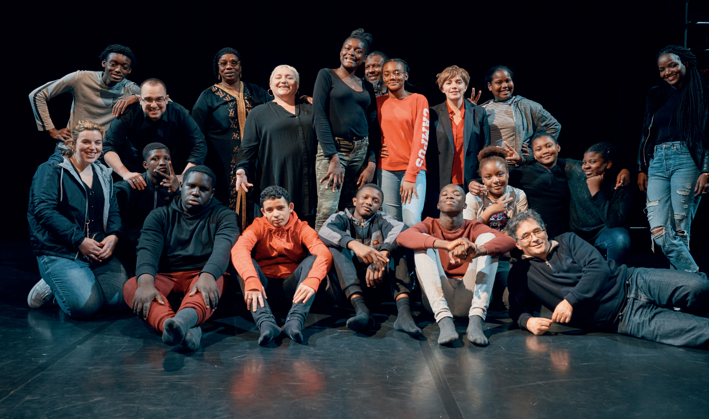
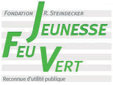
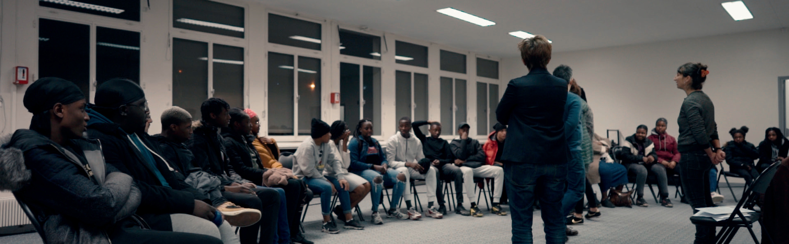
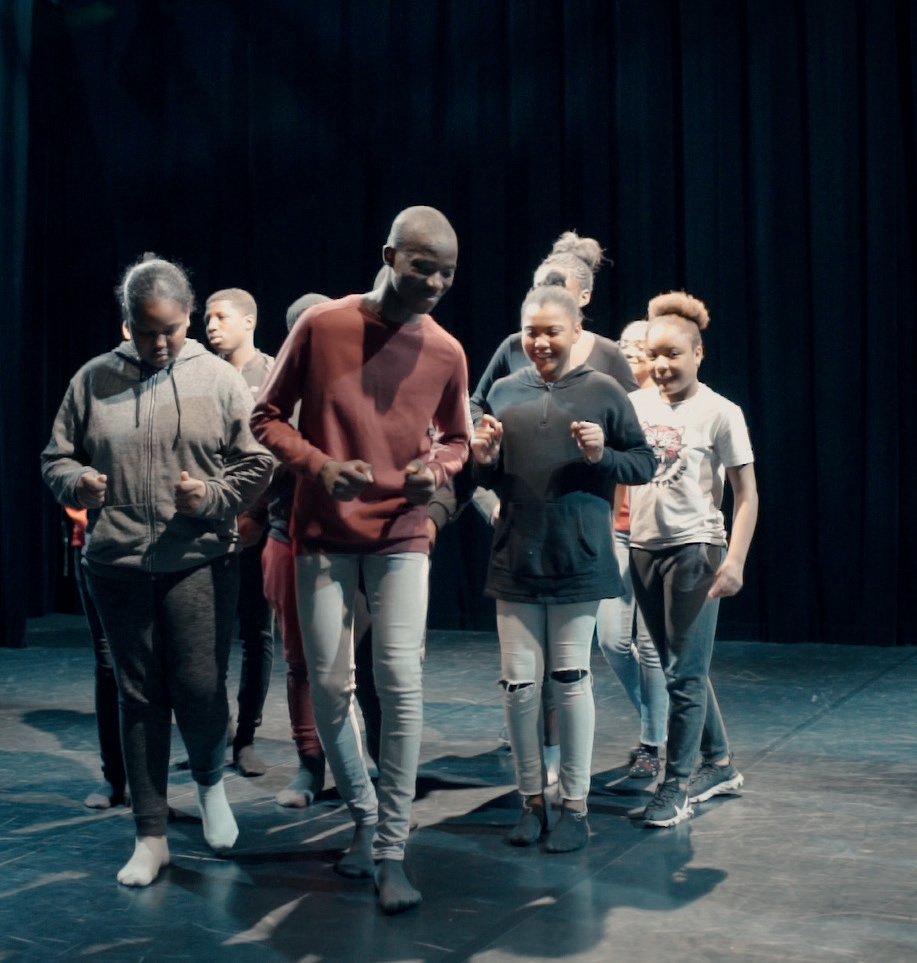

Journey around me
Transcript - Journey around me
First meeting
We meet for the first time at the house of theatre and dance in Épinay-sur-Seine. They have never been on a theatre stage, they come from three different neighborhoods and are accompanied by their educators. And when you enter this story with us, well, we will be a resource person at the end.
Ask questions, don't be afraid, we'll be there for you. It's like a family, but there are rules, we come in, we come in, we respect the family. Arms alongside the body, change directions, do not go around in circles.
So trust the group, I know you like to take the lead, but So be confident since we are going to be a group, we are going to show ourselves, we are going to do things. So that's already very good. Again. There you will be warm and awake, and that's it, you're young and all, you can't be in pain.
There are a lot of neighborhood conflicts, there are a lot of risks, so from there, it's very complicated for us. It's a lot of social difficulties.
Financial difficulties are the priority for our young people, I would say in certain families, the priority is, you come home from school, you go to your shower, you have your snack, you move on to your homework, then you go to dinner, that doesn't exist. Together we will invent a story, through their smartphone, a play and a documentary.
Be relaxed those who wear, take off these people, take off these people. Oh is it for you? Yeah ! Let's go ! Yeah ! Yeah ! Theatre is something where we express our emotions, we let go a little, we don't express our emotions enough, we try to hide them. It represents everything. Theatre is a work that transforms a person.
Questions about adolescence
It frees you, you can do what you want, not like outside, outside you shy away. For me it's useful, because you already show yourself in front of people, you start taking texts, showing everyone, instead of showing yourself.
Theatre represents freedom, you can do anything, you can express all your feelings, even if it's for a game, you can let go of everything. Journey around me is built around the questions we ask ourselves during adolescence. What I love most in the world is my parents. Sports. Football. To sleep. Either music or dance.
What do you love most in the world? I think I don't really like this question. It's a tricky question. What I know best in the world is necessarily saying that we love the rest less. That's the best way to get into trouble. It's having my family by my side. My parents. It's my mother, because I only have her and my sister.
More than our parents, in the accent, you better think about speaking yourself. Yeah ! You better think about yourself and speak! What do you hate most in the world? To express through violence. Racism. Politicians who only talk bullshit. The cold! Classes. You have to rest a little, you know, you have to rest. I don't hate anything. I like everything.
It is people who change in front of people. It's the hypocrites. What I hate is when there are a lot of people, I'm very shy. I don't show myself and when I start to like people, well, I open up. But otherwise, it’s humility. Oh dear, it's a question again, I don't know, I don't have anything about it.
Except for the things we love by necessity. Without thinking, we have to love because otherwise, it's not normal. I know what I hate, and I'm going to say that. Girls who think they are in American films that ruin life, like those you are here before Scarface, and not just like kids having fun.
Love, fears and family
I heard “I love you”, but people say that for laughs these days. But that's not the real meaning. It's not like saying "I love you" like that. It’s because I tell my mother “I love you”. Obviously, when you tell your family, it’s beautiful.
A man in your family can disappear from one day to the next, and it leaves you feeling a little upset and saying “finally, I said it”. I wanted to have the same love that my parents had. And then, as I grew up, my mom, my love, left. I can't believe in love anymore.
I don't know, love is sometimes disastrous, sometimes it hurts you. And I don't want to suffer just for love. Because if the person doesn't like it, it's shameful to say it in front of everyone, or just to the person, because it's the person who will repeat it. My mother always told me “it really bothers me”.
It's not so much failure that scares me. It's seeing loved ones disappointed that scares me the most. It's seeing someone close to me die. Because me, in my city, it's not me in my city. Already, there is already a friend of mine, he is dead. Because he actually got shot, right down the street from my house.
And that was bad for me. And I don't want that to happen anymore. Being able to be together and forget for a moment that we come from a neighborhood, and honestly, but getting from there, it's complicated. I hope this is the start of an adventure. Maybe short, it will end on June 4, but it will stay there in their heads and they will not forget that. And for me, that's important.
Workshops and theatre
I love you, I love you, I love you. All these projects are very important to us, because even if the project ends, the support does not end. The young people continued to follow them. And I remain very positive because we have a very important role for the future, for these young people.
And there you have it, seeing that there are a lot of young people who work, who have become parents, and who have values today, which they pass on to their children. Real silence together. They say you need one thing to do theatre. We need people to hear the words you say to understand the story, to understand who you are, where you are and what you're saying.
These are the words that will fool you. And if people can't hear what you're saying, they'll get bored and tune out. For this second part of the day, you have one hour to make a video. And the theme is confinement, deconfinement. Really, have fun with all the effects that TikTok offers. All right ? OK? Here we go!
Frankly, I find that you have progressed enormously, even compared to the time I left you. So, keep going, go ahead, let go. There are treasures in you, it is with these treasures that we will write the show. It is very important that you know your texts by heart. If you don't learn your texts by heart, nothing will happen.
Nothing will happen because you will be searching for your words. You will see someone who is searching for his words, who is not living what he is saying. You won't be able to believe what you're doing, because you'll be searching for the text.
And if you're not the first to believe in what you're doing, we'll get bored and we'll lose you. I thought I was going crazy when I thought I had the answer off the top of my head. When I thought I had the answer off the top of my head. The guidance counselor, I've never seen her but I don't like her. The guidance counselor. The guidance counselor. The guidance counselor.
Dreams and final text
Is it more difficult to be in someone's eyes? It depends if it's with someone I don't know. It's more intimidating. It's because that's what's going to happen when we play the show. There are people you don't know. It's easy to train with friends.
But when you go to perform, there are people who are not going to know you. There, there was a lot of talk as you passed by. And your strength was, okay, she's not listening to me, it's okay. I trace my path and move forward. That’s a strength. In yourself, for you to be able to feel things, you must not be divided in two.
We are made of several floors. We are made like a rocket. Energy, emotion, mind. A rocket. And something is going to happen at the theatre. We can align energy, image, emotion and words. My biggest dream is already to have at least the baccalaureate plus five. Travel around the world. Be a doctor. To be in a good place with my loved ones.
Really, I should observe everything in the city. I wanted to do the same, here I am telling you about my life. I'm destroyed from the inside, but I keep smiling. My mind is no longer there, but I keep smiling. Drugs, theft, money. All this got me into trouble. I'm destroyed from the inside, but I keep smiling.
The elder told me that I had to invest, but I had much worse things in mind. You attack my family, well, I'll come. You want my skin, well, go ahead, come and shoot. They serve very well, I am capable of the worst. In truth, I advise you to escape. I advise you to play the flute. In my head, there are only uneducated people.
We are cultured, we only need one. Yeah, we only need one.

Cultural Diversity Award 2021
With the support of the department of Seine-Saint-Denis,
The Vinci Foundation for the City,
The House of Theatre and Dance in Épinay-sur-Seine.
Lab Winner 2020
Journey around me
Principe actif - swing digital production




Journey around me
Teenagers from Épinay-sur-Seine speak out about love.
Cultural Diversity Award 2021
2020 Lab Laureate of the Grand Paris Media Center
